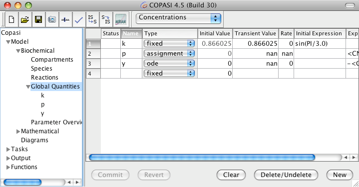
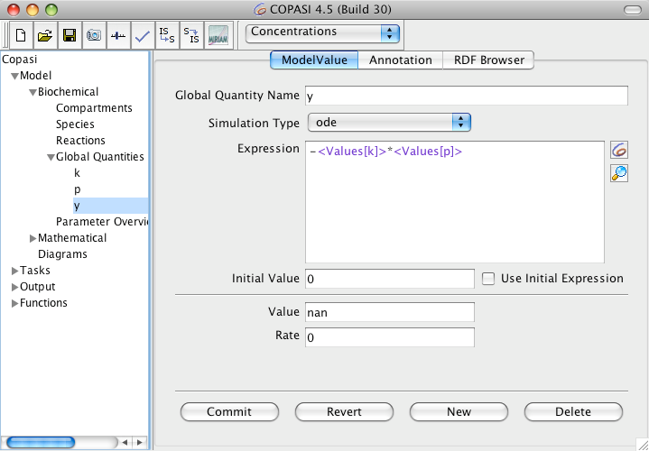
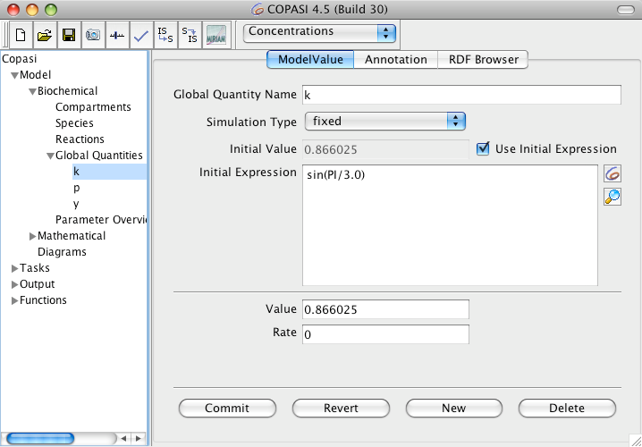

In the model tree right below the Reaction branch is the Global Quantities branch. If you select this branch, you see a table with all the global quantities that have been defined in your model. When you start a new model this table, just like all the others so far, is empty (see below). The table has eight columns and the ones named Status and Name should by now be already familiar. The third column specifies the type of the global quantity. There are three alternatives for that:
fixed means the global quantity has a constant value (that can be used as a global parameter),
assignmentmeans the value of the quantity is calculated from a mathematical expression, and
ode. If the type is
ode the quantity is treated as a variable of the model and a differential equation for this variable can be provided.
The forth and fifth column contain the initial and transient value of the global quantity as well as the rate of change of the value is displayed on the sixth column. The last two columns contains the mathematical expressions which may be required as long as the type is not
fixed.
As with all other model elements, you can choose how you want to add a global parameter. The most convenient way is to just enter a name in an empty cell of the column termed Name.
|  |
| Global Quantities Table with 3 Entries |
If you click on the name of a global quantity in the tree on the left or double click on a row of the table only the information correlated with the chosen global quantity will be displayed.
|  |
| Global Quantity User Interface with ODE Rrule |
Just as compartments and species, global quantities do not have to be a constant but can be reassigned during e.g. a time course simulation depending the values of one or more model entities. In order to specify whether a parameter has a constant value or the value is calculated on the fly according to a mathematical expression, the drop down list called Simulation Type should be used.
The drop down list contains three following entries:
Global Quantities Simulation Types| Name | Description |
| fixed | the value of the parameter is constant (which corresponds to the given initial value) |
| assignment | the value of the parameter is determined by evaluating the given mathematical expression |
| ode | the rate of change of the parameters value is determined by an ordinary differential equation |
If you want the parameters value to be calculated from a given mathematical expression you select the entry called
assignment from the drop down list. This enables a text field where the mathematical expression can be entered. Likewise if you want the rate of change of the parameters value to be determined by an ordinary differential equation (ode) you select the entry called
ode from the drop down list.
Not only the transient value of a parameter can be specified as a mathematical expression, but also the initial value of the parameter. If you want do specify such a mathematical expression for the initial volume of a compartment, check the check box called Use Initial Expression. An initial expression can only be specified if the Simulation Type drop down list is either set to
fixed or to
ode . If the list is set to
assignment, the given assignment automatically acts as an initial assignment and there is no need to specify an additional initial assignment.
|  |
| Global Quantity Widget with an Initial Assignment |
The mathematical expressions that can be specified for rules and initial assignments may contain the same elements as the expressions used to defined function definitions. For a detailed description of the elements see
User Defined Functions. When it comes to referencing values of other model entities within mathematical expressions, there is a slight difference between the mathematical expression for a rule and that for an initial assignment. The former may reference transient values of other model entities whereas the latter may only reference initial values of other model entities.
Even so COPASI does not support building models from ordinary differential equations, one can specify a model as a set of differential equations using a set of global parameters which have the type ode.